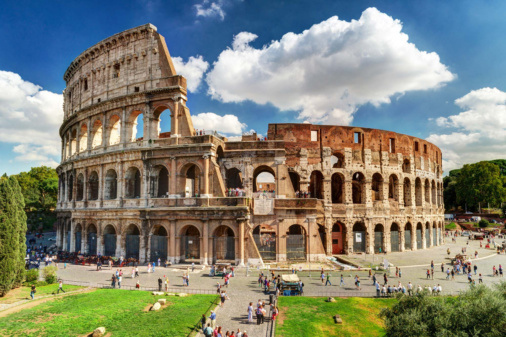
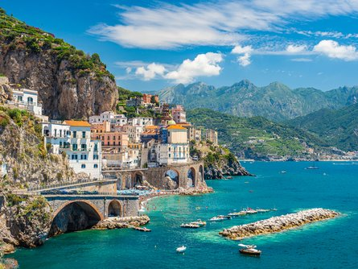
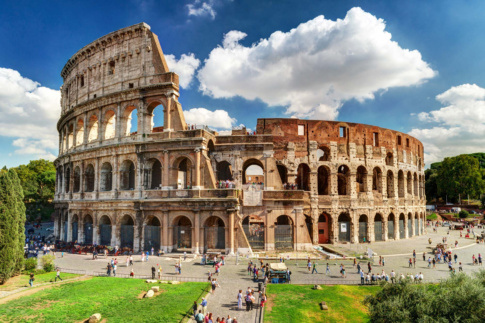
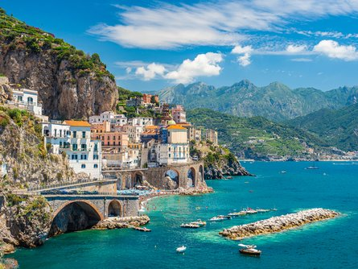

Eiffel Tower
Locally nicknamed "La dame de fer" (French for "Iron Lady"), it was constructed from 1887 to 1889 as the centerpiece of the 1889 World's Fair and was initially criticized by some of France's leading artists and intellectuals for its design, but it has become a global cultural icon of France and one of the most recognizable structures in the world. The tower is 324 metres (1,063 ft) tall, about the same height as an 81-storey building, and the tallest structure in Paris. Its base is square, measuring 125 metres (410 ft) on each side. During its construction, the Eiffel Tower surpassed the Washington Monument to become the tallest man-made structure in the world, a title it held for 41 years until the Chrysler Building in New York City was finished in 1930. It was the first structure in the world to surpass both the 200-metre and 300-metre mark in height.
The Roman Colosseum
Also named the Flavian Amphitheater, is a large amphitheater in Rome. It was built during the reign of the Flavian emperors as a gift to the Roman people. The sheer number of entrances proved to be necessary: the Colosseum could hold more than 50,000 spectators at its maximum capacity. The Colosseum is famous because it is an origin of gladiator battles that took place in the time of Roman Empire. Moreover, Dion Cassius claimed that 9000 wild animals were killed in the one hundred days of celebrations which inaugurated the amphitheater.
The Amalfi Coast
Is a stretch of coastline in southern Italy overlooking the Tyrrhenian Sea and the Gulf of Salerno. It is located south of the Sorrentine Peninsula and north of the Cilentan Coast. Celebrated worldwide for its Mediterranean landscape and natural diversity, the Coast is named after the town of Amalfi, which makes up its main historical and political centre. It has been a very popular jet set destination since the 18th century, when it was a frequent stopover on the Grand Tour of upper-class Europeans. Nowadays it attracts thousands of international visitors annually. In 1997, the Amalfi Coast was listed as a UNESCO World Heritage Site.